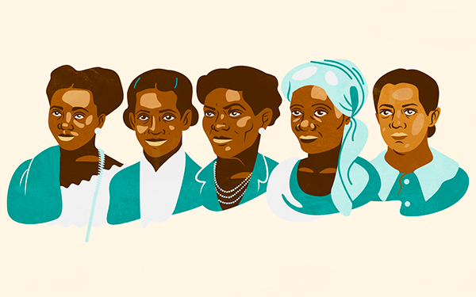
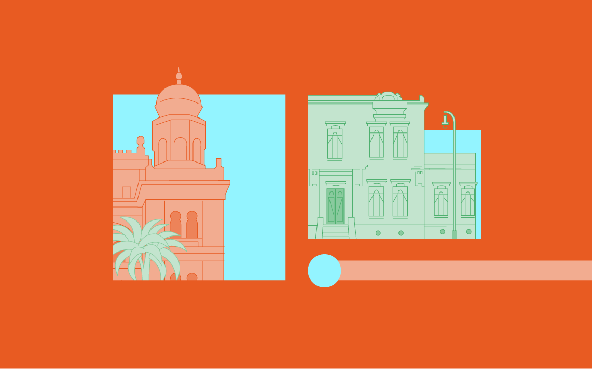
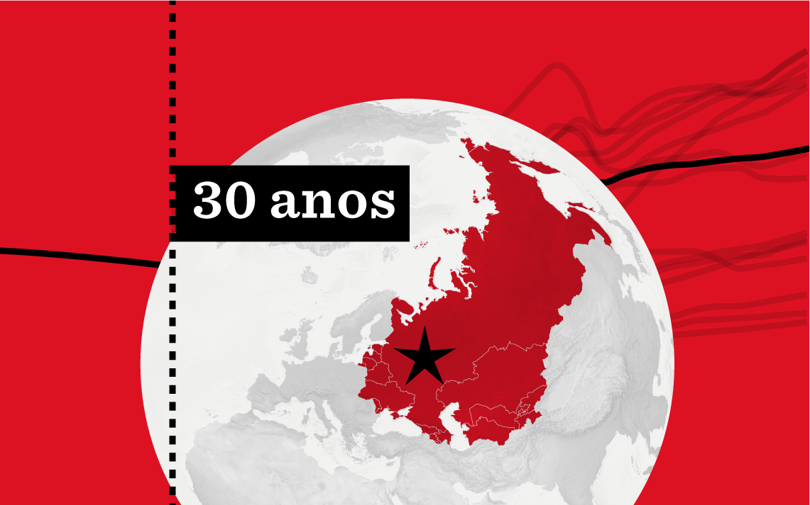
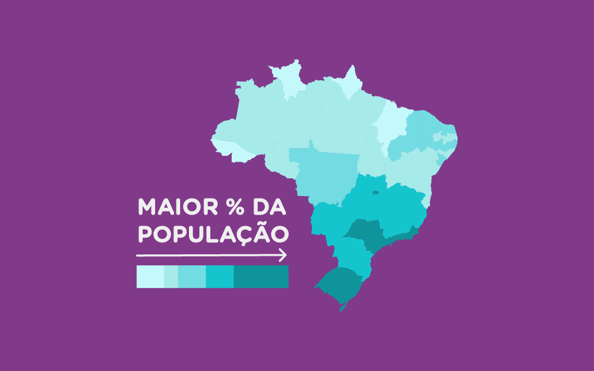
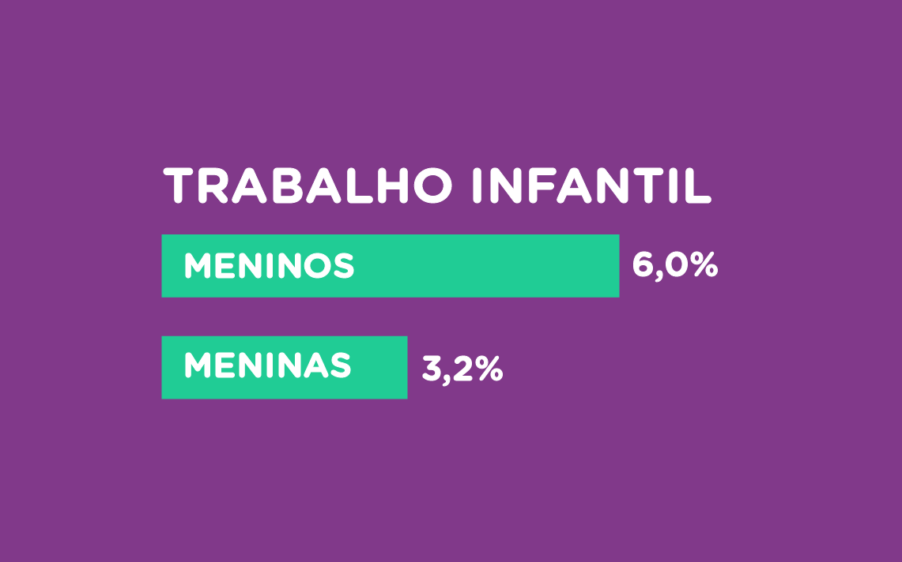
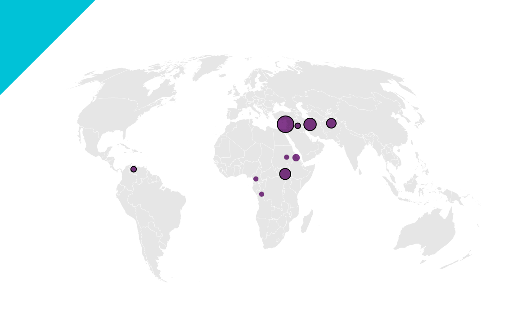

I am Caroline Souza
a visual journalist
& dataviz designer
based in São Paulo

About
Fast-learning person and passionate about learning new things. My work consists of using data to help tell a story and also finding ways to explain and visualize complex information through understandable charts, diagrams, maps, and illustrations.
Download CVSkills
- Data analysis
- Data visulization
- storytelling with numbers and data
- Research
- Prototyping
- Illustration
Experience
Nexo Jornal
Information Designer Assistent
March 2019 - Present
Produced graphics and stories about many different topics from economics to music. Collaborated with colleagues from different teams regarding dataviz production.
Geofusion
Geoprocessing and spatial data intern
October 2017 - February 2019/p>
Responsable for updating the company’s database and providing maps and charts built on public information.
Education
Columbia University Graduate School of Journalism
The Lede Program
June - August 2021
Post-bac certification program from Columbia's School of Journalism. Focused on data analysis, web scrapping, storytelling with numbers, mapping projects. Explored data and visualized information to create stories from pitch to publication.
University of São Paulo
B.A. Degree in Geography
March 2021
Attended a 5-year course in Brazil's leading university. This course that covered spatial analysis, cartography, enviromental issues, addressing critical thinking towards society needs.
Recent Works
Here are some of my favorite projects I have done lately. Feel free to check them out.
-
Historical data storytellingBlack women in Brazil
-
Data storytellingBrazil’s vaccine manufacturers against covid-19
-
Web development30 years aniverssary of the Soviet Union's collapse
-
Data storytellingWhich brazilians had health insurance before the pandemic?
-
Data storytellingBrazilian child labor before the pandemic hit
-
Data storytellingWith 29 athletes, refugee team competes in 12 sports in Tokyo
Black women that left a print in Brazil’s history
A serie based on 5 important black women in Brazil’s history throught historical data from national archives, open data from webistes, maps and photos.
- Visual story
- Historical research
- Data Visualization
The story of brazil’s vaccine manufacturers against covid-19
An illustrated story about the history of Butantan Institute and Fiocruz displaying their importance towards covid-19 vaccine production. This project includes maps created in Google Earth, charts and photos.
- Visual story
- Data storytelling
- Data analysis
The Soviet Union's collapse and its impact on former republics
Storie on how the end of the Soviet Union impacted the former republics. This storie includes maps, charts and a interative menu
- Web development
- Data visualization
- Project coordination
Which brazilians had health insurance before the pandemic?
Reported on how health insurance is related to a very secluted population in Brazil, using data available by IGBE, this story includes maps and charts.
- Data storytelling
- Data analysis
Brazilian child labor before the pandemic hit
Story about child labour in Brazil. The data available came from Statics Brazilian Institute
- Data storytelling
- Data analysis
With 29 athletes, refugee team competes in 12 sports in Tokyo
Reported on the second participation of the refugee team. Story includes a chart and maps made in flourish and later finished on Flourish
- Data storytelling
- Data analysis
Thanks for scrolling all this way!
Fell free to send me a message about your ideas and how we can work them out.